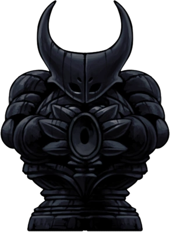
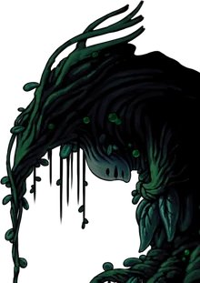
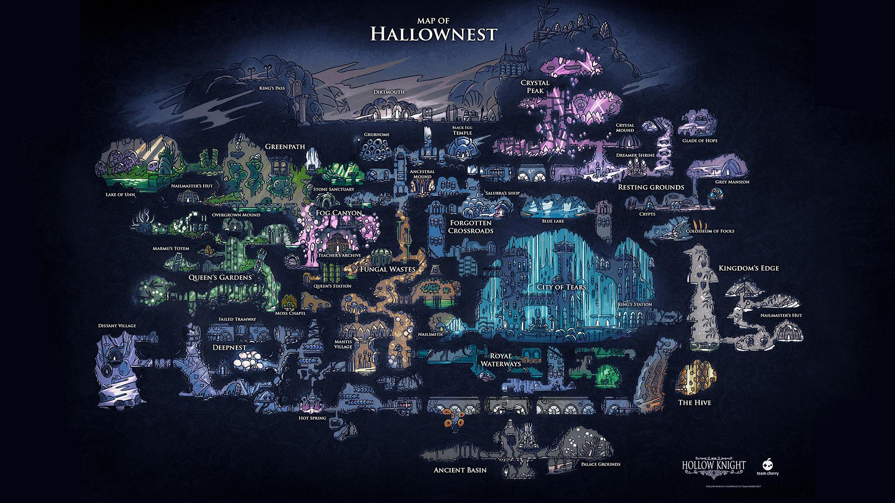

Personnages:
L'escorte Royale ne nous a malheureusement pas encore dévoilé ses compétences


Dans une époque où les terres d'Hallownest se remettent lentement de l'infection de Radiance, le nouveau Roi pâle va essayer de rassembler tous les royaumes. Le roi pâle bien décidé à ne pas commettre les mêmes erreurs que son prédécesseur va acter pour son idéal en toute passivité et sans aucune forme de violence. Malheureusement tous les royaumes ne prêtent pas forcément confiance au roi pâle et ainsi son idéal d'un monde où tout peuple ne fait qu'un sans aucune rancœur et avec des accords universels lui semble alors vain. Seulement un jour, un des rares peuples n'étant pas encore rattaché au royaume souhaite faire une rencontre pour remettre en question leur précédent choix. Le roi quitte alors ses terres accompagné de son escorte composé des plus puissants guerriers. Cependant, il laisse derrière lui lors de son excursion son royaume privé des forts chargés de le protéger au périls de leurs vie.
